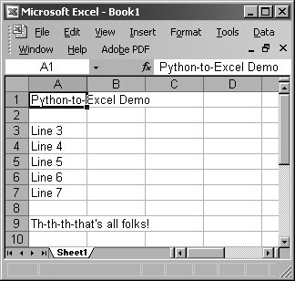
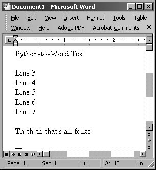
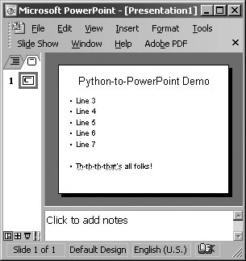
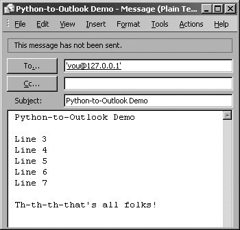
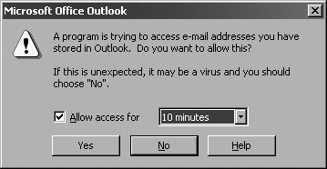
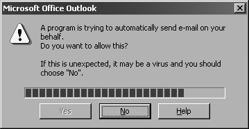
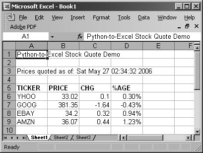

23.2. Programming Microsoft Office with Win32 COMOne of the most useful things that you can do in an everyday business environment is to integrate support for Win32 applications. Being able to read data from and write data to such applications can often be very handy. Your department may not be necessarily be running in a Win32 environment, but chances are, your management and other project teams are. Mark Hammond's Windows Extensions for Python allows programmers to interact natively with Win32 applications in their native environment. (It can be downloaded at the book's Web site.) The Win32 programming universe is expansive. Most of it available from the Windows Extensions for Python package, i.e., Windows API, processes, Microsoft Foundation Classes (MFC) Graphical User Interface (GUI) development, Windows multithreaded programming, services, remote access, pipes, server-side COM programming, and events. And don't forget about IronPython (http://codeplex.com/Wiki/View.aspx?ProjectName=IronPython), an implementation of the Python language in C# for the .NET/Mono development environment. In this section, we are going to focus on one part of the Win32 programming universe, which easily has practical applications for client-side, COM programming. 23.2.1. Client-Side COM ProgrammingWe can use Component Object Model, better known as COM (or its marketing name, ActiveX), to communicate with tools such as Outlook and Excel. For programmers, the pleasure comes with being able to "control" a native Office application directly from their Python code. Specifically, when discussing the use of a COM object, e.g., launching of an application and allowing code to access methods and data of that applications, this is referred to as COM client-side programming. Server-side COM programming is where you are implementing a COM object for clients to access. Core Note: Python and Microsoft COM (Client-Side) Programming
The prerequisites to this section include running on a Win32 platform with both Python and the Windows Extensions for Python installed. You must also have one or more Microsoft applications available to try the examples with. The download instructions for the Windows Extensions should be adequate to get your system ready to go. Since PythonWin comes with the Extensions distribution, we recommend IDE for building and testing your Win32 scripts. In this section, we will show you how you can interact with an Office application. We will present a few examples, some of them quite useful, and describe how they work in detail. You will also find several of these at the "Python Cookbook" Web site. We confess to readers that we are not COM or VisualBasic experts and we are well aware that our examples can be vastly improved. We would like to solicit the readership to drop us a line and send us any comments, suggestions, or improvements that you would consider for the general audience. Let us start with very simple examples of how to launch and interact with Microsoft Excel, Word, PowerPoint, and Outlook. Before we show you examples of all we have discussed, we want to point out that client-side COM applications all follow similar steps in execution. The typical way in which you would interact with these applications is something like this:
Enough talking ... let us take a look at some code. Below are a series of scripts that control a different Microsoft application. All import the win32com. client module as well as a couple of Tk modules to control the launching (and completion) of each application. Also like we did in Chapter 19, we use the .pyw file extension to suppress the unneeded DOS command window. 23.2.2. Microsoft ExcelOur first example is a demonstration using Excel. Of the entire Office suite, we find Excel to be the most programmable. It is quite useful to pass data to Excel so that you can both take advantage of the spreadsheet's features as well as viewing data in a nice printable format. It is also useful to be able to read data from a spreadsheet and process data with the power of a real programming language like Python. We will present a more complex example using Excel at the end of this section, but we have to start somewhere. So, we start with Example 23.2. Example 23.2. Excel Example (excel.pyw)
Line-by-Line ExplanationLines 16, 31We import Tkinter and tkMessageBox only to use the showwarning message box upon termination of the demonstration. We withdraw() the Tk top-level window to suppress it (line 31) before bringing up the dialog box (line 26). If you do not initialize the top level beforehand, one will automatically be created for you; it won't be withdrawn and will be an annoyance on-screen. Lines 1117After the code starts (or "dispatches") Excel (an application), we add a workbook (a spreadsheet that contains sheets that the data are written to; these sheets are organized as tabs in a workbook), and grab a handle to the active sheet, meaning the sheet that is displayed. Do not get all worked up about the terminology, which may be confusing mostly because a "spreadsheet contains sheets." Core Note: Static and dynamic dispatch
The Visible flag must be set to true to make the application visible on your desktop, then pause so that the user can see each step in the demonstration (line 16). For an explanation of the sleep() call on line 17, just read the next paragraph. Lines 1924In the application portion of the script, we write out the title of our demonstration to the first and upper leftmost cell, (A1) or (1, 1). We then skip a row and then write "Line N" where N is numbered from 3 to 7, pausing 1 second in between each row so that users can see our updates happening live. (The cell updates would occur too quickly without the delay.) Lines 2632A warning dialog box comes up after the demo letting the user know that he or she can quit this demo once they have observed the output. The spreadsheet is closed without saving, ss.Close([SaveChanges=]False), and the application exits. Finally, the "main" part of the script just initializes Tk and runs the core part of the application. Running this script results in an Excel application window, which should look similar to Figure 23-1. Figure 23-1. Python-to-Excel demonstration script (excel.pyw) 23.2.3. Microsoft WordThe next demonstration is with Word. Using Word for documents is not as applicable to the programming world as there is not much data involved. One could consider using Word for generating form letters, however. In Example 23.3, we create a document by simply writing one line of text after another. Example 23.3. Word Example (word.pyw)The Word example follows pretty much the same script as the Excel example. The only difference is that instead of writing in cells, we have to insert the strings into the text "range" of our document and move the cursor forward after each write. We also have to manually provide the line termination characters of carriage RETURN following by NEWLINE (\r\n). If we run this script, a resulting screen might look like Figure 23-2. Figure 23-2. Python-to-Word demonstration script (word.pyw) 23.2.4. Microsoft PowerPointApplying PowerPoint in an application may not seem commonplace, but you could consider using it when you are rushed to make a presentation. You can create your bullet points in a text file on the plane, then upon arrival at the hotel that evening, use a script that parses the file and auto-generates a set of slides. You can further enhance those slides by adding in a background, animation, etc., all of which are possible through the COM interface. Another use case would be if you had to auto-generate or modify new or existing presentations. You can create a COM script controlled via a shell script to create and tweak each presentation generated. Okay, enough speculation ... now let us take a look at our PowerPoint example (i.e., Example 23.4). Example 23.4. PowerPoint Example (ppoint.pyw)
Again, you will notice similarities to both the Excel and Word demonstrations above. Where PowerPoint differs is in the objects you write data to. Instead of a single active sheet or document, PowerPoint is somewhat trickier because each presentation slide can have a different layout. With a presentation, you have multiple slides, and each slide can have a different layout. (Recent versions of PowerPoint have 30 different layouts!) The actions you can perform on a slide depend on which layout you have chosen for each page. In our example, we just use a (title and) text layout (line 17) and fill in the main title (lines 1920), Shape[0] or Shape(1)Python sequences begin at index 0 while Microsoft software starts at 1, and the text portion (lines 2226), Shape[1] or Shape(2). To figure out which constant to use, you will need a list of all the ones available to you. For example, ppLayoutText is defined as a constant with a value of 2 (integer), ppLayoutTitle is 1, etc. You can find the constants in most Microsoft VB/Office programming books or online by just searching on the names. Alternatively, you can just use the integer constants without having to name them via win32.constants. The PowerPoint screenshot is shown in Figure 23-3. Figure 23-3. Python-to-PowerPoint demonstration script (ppoint.pyw) 23.2.5. Microsoft OutlookFinally, we give an Outlook demonstration, which uses even more constants than PowerPoint. As a fairly common and versatile tool, use of Outlook in an application makes sense, like it does for Excel. There are always e-mail addresses, messages, and other data that can be easily manipulated in a Python program. Example 23.5 is an Outlook example that does a little bit more than our previous examples. Example 23.5. Outlook Example (olook.pyw)
In this example, we use Outlook to send an e-mail to ourselves. In order to make the demonstration work, you need to turn off your network access so that you do not really send the message, and thus are able to view it in your Outbox folder (and delete it if desired after viewing it). After launching Outlook, we create a new mail message and fill out the various fields such as recipient, subject, and body (lines 1521). We then call the send() method (line 22) to spool the message to the Outbox where it will be moved to "Sent Mail" once the message has actually been transmitted to the mail server. Like PowerPoint, there are many constants available ... olMailItem (with a constant value of 0) is the one used for e-mail messages. Other popular Outlook items include olAppointmentItem (1), olContactItem (2), and olTaskItem (3). Of course, there are more, so you will have to find a VB/Office programming book or search for the constants and their values online. In the next section (lines 2427), we use another constant,olFolderOutbox (4), to open the Outbox folder and bring it up for display. We find the most recent item (hopefully the one we just created) and display it as well. Other popular folders include: olFolderInbox (6), olFolderCalendar (9), olFolderContacts (10), olFolderDrafts (16), olFolderSentMail (5), and olFolderTasks (13). If you use dynamic dispatch, you will likely have to use the numeric values instead of the constants' names (see previous Core Note). Figure 23-4 shows a screen capture of just the message window. Figure 23-4. Python-to-Outlook demonstration script (olook.pyw) Before we get this far, however, from its history we know that Outlook has been vulnerable to all kinds of attacks, so Microsoft has built some protection into Outlook for restricting access to your address book and being able to send mail on your behalf. When attempting to access your Outlook data, the screen shown in Figure 23-5 pops up where you must explicitly give permission to an outside program. Figure 23-5. Outlook address book access warning Then when you are trying to send a message from an external program, you get the warning dialog shown in Figure 23-6, where you have to wait until the timer expires before you are allowed to select "Yes". Figure 23-6. Outlook e-mail transmission warning Once you pass all the security checks, everything else should work smoothly. There is software available to help get you around these checks but they have to be downloaded and installed separately. On this book's Web site at http://corepython.com, you will find an alternative script that combines these four smaller ones into a single application that lets users choose which of these demonstrations to run. 23.2.6. Intermediate ExampleNow that we have gotten a good taste of Office programming, let us build a more useful application by combining the material from this section with that of the Web Services section. If we were to combine the stock quote example with our Excel demonstration script, we would get an application that would download stock quotes from the net and pop them directly into Excel without having to create or use CSV files as a medium (see Example 23.6). Example 23.6. Stock Quote and Excel Example (estock.pyw)
Line-by-Line ExplanationLines 113We import all of the attributes from both the original Web services stock quote (stock.py) above and Excel scripts here as well as define the same constants. Lines 1532The first part of the core function launches Excel as seen earlier (lines 1721). The title and timestamp are then written to cells (lines 2329), along with the column headings, which are then bolded (line 30). The remaining cells are dedicated to writing the actual stock quote data, starting in row 6 (line 32). Lines 3443We open the URL as before (line 34), but instead of just writing the data to standard output, we fill in the spreadsheet cells, one column of data at a time, and one company per row (lines 3542). Lines 4551The remaining lines of our script mirror code that we have seen before. Figure 23-7 shows a window with real data after executing our script. Figure 23-7. Python-to-Excel stock quote demonstration script (estock.pyw) Note that the data columns lose the original formatting of the numeric strings because Excel stores them as numbers using the default cell format. We lose the formatting of the numbers to two places after the decimal point, e.g., "34.2" is displayed even though Python passed in "34.20"; and for the "change from previous close column," we lose not only the decimal places but also the plus sign ( + ) indicating a positive change in value. (Compare the output in Excel to the output from the original text version [stock.py]. These problems will be addressed by an exercise at chapter's end.) |

 COM Makepy utility and choose the appropriate application object library.) This utility program creates and caches the objects that are needed for the application. Without this prep work, the objects and attributes will have to be built during runtime; this is known as
COM Makepy utility and choose the appropriate application object library.) This utility program creates and caches the objects that are needed for the application. Without this prep work, the objects and attributes will have to be built during runtime; this is known as